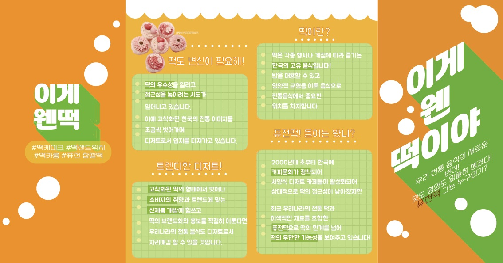
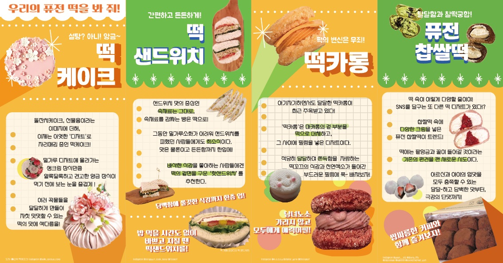
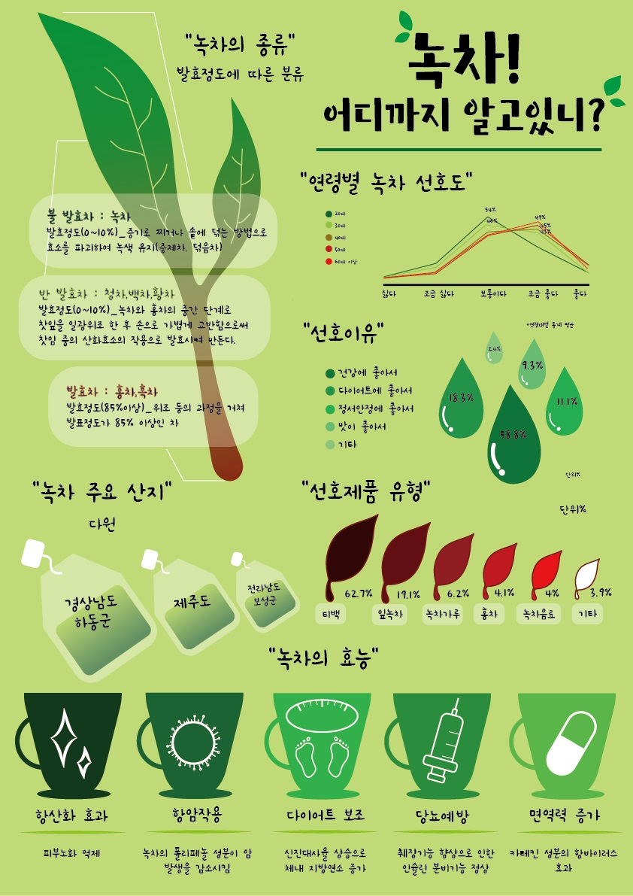
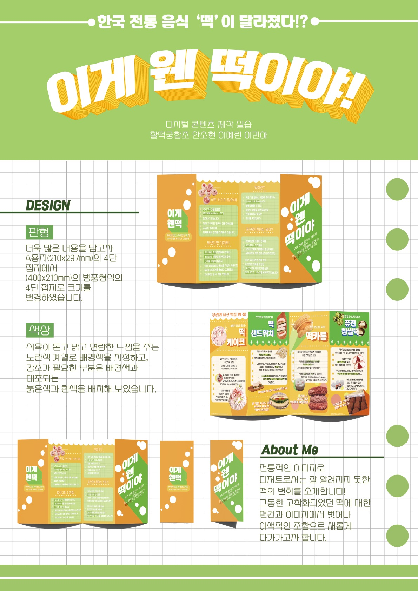
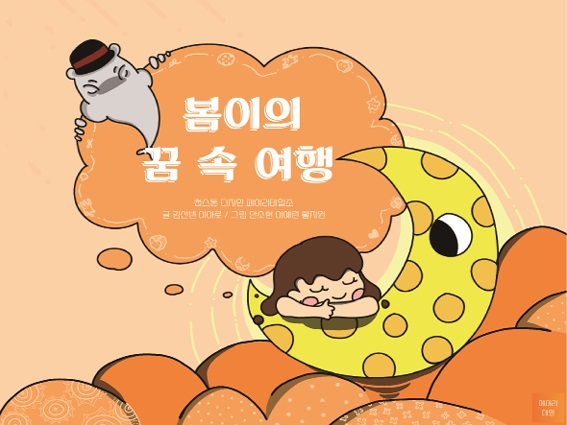

저의 복수전공은 디지털인문예술학과입니다!
<복전을 시작하면서 만든 작품들입니다>
    디인예에서는 디자인부터 프로그래밍에대한 정보까지 넓은 범위의 학문을 배우고 있습니다. 인문학적인 정보는 저의 본전공인 일본학에서 많이 참고하는 편입니다. 위에 작품들은 조별과제와 개인과제를 통해 만든 작품들입니다. 포토샵/일러스트/인디자인/코딩/프리미어 등등 독학하기에는 어려워보이는 학문들도 교수님들의 도움을 받아 조금씩 경험해보며 활용성을 넓혀가고 있습니다! 매학기 전시회를 열어 다른사람들의 작품을 보는 것도 디인예의 장점이라고 생각 할 수 있다고 생각합니다!
학과에대해 더 자세한 정보는 → click!